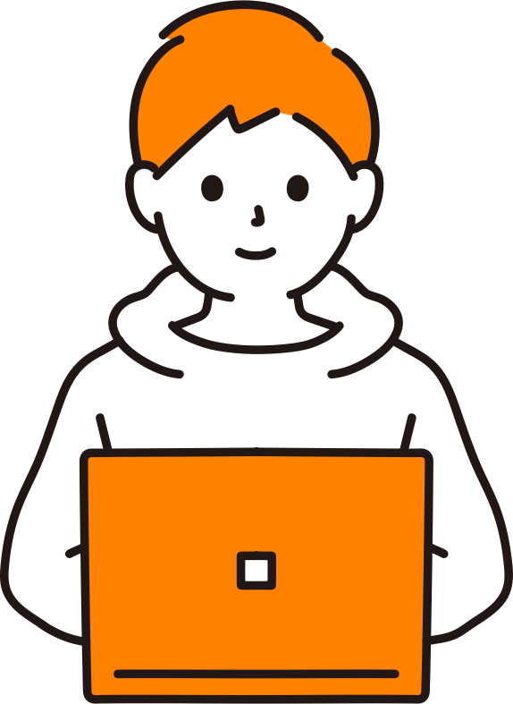
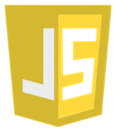
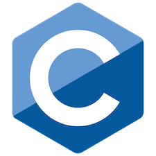
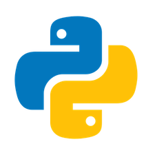
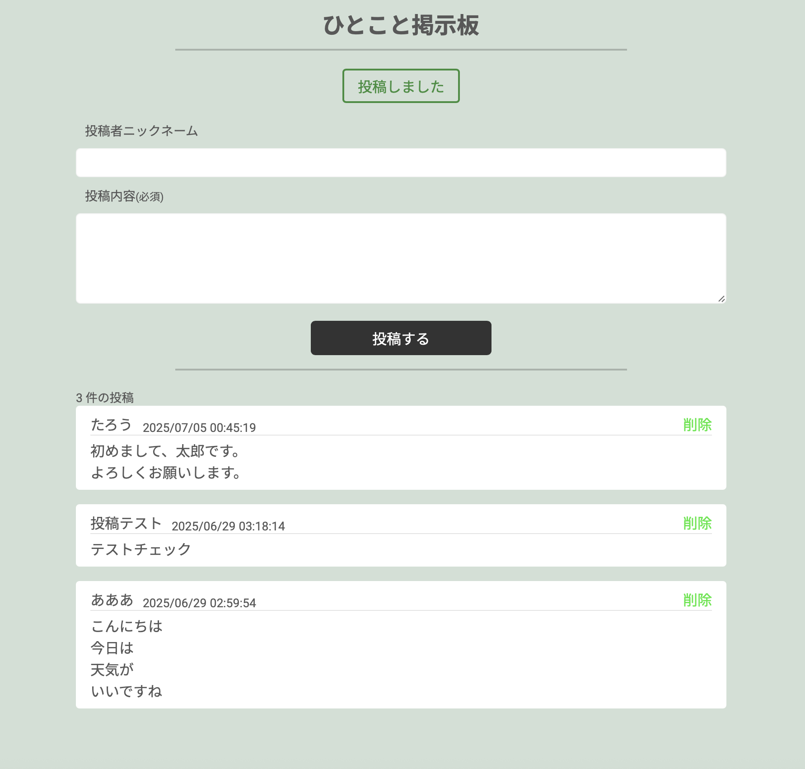

About
フトシ
Futoshi
新潟大学院の情報系に通う大学院生。
学部時代は1年生から4年生まで情報分野の基礎を幅広く学習。
プログラミング演習の授業では、プログラミングに強く没入すことはなかった。
自分で制作物を作るようになったのは3年生のときに、知人の紹介で参加したオンラインのプログラミングスクール。
そこで初めてWebアプリケーションの制作に取り組み、仕組みを理解しながら自分で手を動かすことの面白さを実感した。
仕組みを知るだけでなく、実際に自分で試してみることの重要性を強く感じ、以降は個人でもWeb開発やツール制作に取り組んでいる。
趣味はアニメ鑑賞とマーベル作品（MCU）。
最近はハンターハンターとLOL(League of Legends)にハマっている...（ジンクスが好き）

Skills
HTML / CSS


大学の講義では習わないため、学習サイト等で学び ポートフォリオサイトを作成しました。
JavaScript

フロントサイドでは、動きのある動作を作るために使用しました。また、Reactを使用する際にJavascriptを使ってコードを書きました。
おみくじ
あなたの運勢は●●●です^_^
React / Next.js

Reactは個人で学習中です。
個人で開発しているものは基本的にReactのフレームワークであるNext.jsで作成しています。
また、Reactを用いてゲーム会社のインターンで作品を作成したことがあります。
PHP
掲示板アプリを作成する際に、データベースを操作するために PHPを用いて作成しました。
C

コンパイラの授業で学んだことを実際に体験してみたくて、 とあるサイトを参考にC言語でC言語コンパイラの作成に挑戦しました。（未完成） C言語はプログラムがどうして動くかの仕組みを知りたいと思う きっかけになりました。
Python

授業でデータサイエンスを行うときに何度も利用した。 文法が単純かつ読みやすくライブラリも豊富であるため 好んで使っている。
Ruby on Rails
ハッカソンでバックエンドのフレームワークとして使用しました。 スキーマの作成や、認証系のコントローラーの作成を行いました。
MySQL
簡単なSQL文が書けます。PostgreSQL 等の他のデータベースも挑戦しようと思っています。
Works

ポートフォリオサイト
概要
現在表示しているサイトです。
学習サイトを参考にしながら、制作しました。 初めて自分の手で
Webページを作成しました。
Webページは自分のイメージを落と仕込む自由度が高いため楽しく作成できました。

掲示板アプリ
概要
PHPを用いて作成した掲示板アプリです。
学習サイトを参考にしながら、制作しました。
データベースとの通信や、条件に対応したエラーの出力、データベース設計の考え方を
学ぶことができかつ同時に実装も行い体感することができたため、とても成長を実感しました。


ポータルサイト
概要
Next.js + Supabaseで作成しているポータルサイトです。
現在も開発中で、様々なサービスを思いつきで作成しており、作ってみたいアニメーションを入れたり、学習と趣味の一石二鳥の開発サイトとして取り組んでいます。
利用可能サービス
・猫画像ジェネレーター
・インベーダーゲーム
・ToDoアプリ（開発中）
サイトへのリンク
portalink.vercel.app
実際にアカウントをメールアドレスから登録可能ですが、リンク先のログイン画面で"Click to Try"ボタンをクリックするとお試しアカウントが利用できます。
使用技術
フロントエンド : Next.js
バックエンド : Supabase
【 作成した画面 】


【 担当箇所 】


POTOLINK ― ポートフォリオ共有サイト
概要
POTOLINKは、【技育CAMP2025】ハッカソン Vol.8で作成した作品です。
この作品はポートフォリオをより活用できる場を目指して開発した、ポートフォリオ共有プラットフォームです。
Docker 環境上で構築し、フロントエンドには React、バックエンドには Ruby on Rails を採用しました。
このサイトでは、誰でも自分のポートフォリオを公開・共有でき、閲覧する側は気になった制作者とコンタクトを取ることができます。
コメント機能や連絡先の共有を通じて、ポートフォリオをきっかけにした新たなつながりを生み出すことを目的としています。
主な特徴（3つの機能）
-
魅せる
自分のポートフォリオをアップロードし、公開することで幅広い人にアピールできます。
-
創る
サイト上で用意されたテンプレートを利用し、簡単にポートフォリオを作成することができます。
-
繋がる
公開されているポートフォリオを閲覧し、気になる作品に「いいね」やコメントを残すことで制作者と交流できます。
今回のハッカソン開発では、最終的なデプロイには至らなかったものの、「魅せる」「創る」「繋がる」を一体化した新しいポートフォリオ活用の形を提案しました。
担当箇所
本プロジェクトでは、バックエンド開発を中心に担当しました。Ruby on Rails を用いて以下の機能を実装しました。
-
ユーザー認証機能
チームメンバーが作成したモデルを活用し、ユーザーの新規登録およびログイン機能を実装しました。これにより、ユーザーが自身のアカウントを作成し、安全にサイトへアクセスできる仕組みを構築しました。
-
コメント機能
公開されたポートフォリオに対して、閲覧者がコメントを投稿できる機能を開発しました。これにより、ポートフォリオを通じた双方向のコミュニケーションを可能にし、利用者同士の交流を促進しました。
工夫したところ
本プロジェクトでは、バックエンド開発やチーム開発の経験がほとんどなかったため、
AIを活用して学習しながら実装を進めた点が工夫の一つです。
初めてのチーム開発では、最終的にコードをマージする際に多くのコンフリクトが発生しましたが、
その都度「どのコードが必要で、どの部分を削除すべきか」をチームで議論しながら解決しました。
この取り組みによって、Git によるバージョン管理やコンフリクト解消の理解が大きく深まり、
チーム開発を円滑に進めるための協働スキルも身につけることができたと実感しています。
【 作成した画面 】


【 作成したアニメーション 】
【 キャラクターとセリフの切り替え 】
f4samurai インターンシップ制作物
概要
9/4~9/5で行われたf4samuraiのサマーインターンシップに参加し、「コードギアス反逆のルルーシュ ロストストーリーズ」のアウトゲームのUIを二人一組で実装しました。
担当箇所
私が作成を担当した箇所は"【 作成した画面 】"の赤い枠線で囲われているUIコンポーネント部分と、右上のメニューボタンを押した時に表示されるメニューモーダルの部分です。
他にも、"【 作成したアニメーション 】"では、メニューボタンを押下した時にアニメーション付きでメニューモーダルが表示される部分と、"【 キャラクターとセリフの切り替え 】"では、キャラクターを押下した時、セリフを押下したときで動画のような処理が発生する部分も担当しました。
工夫したところ
UI部分
-
ホーム画面に映るUIコンポーネントを大きな単位で分割したうえで、さらに小さな単位に分けて実装を行い、再利用性と見通しのよいコード構造を意識しました。
-
作業はFigmaの実装例を参考に進め、ボタン間の距離や配置などを忠実に再現するように心がけ、デザインと実装の違いを最小限に抑えました。
-
実際のゲームと同じようなメニューモーダルを表示するアニメーション(【 作成したアニメーション 】)を追加した。
-
提供された素材を最大限活かすために、キャラクター名を押すとキャラクターを切り替えられるように工夫したほか、画面をタップするとキャラクターのセリフが変化する仕様を組み込み、インタラクティブ性を高めました。
チーム開発部分
-
二人一組での作業だったので、常に相手の進捗を把握しながら進めることを意識し、コードのマージ時にも大きな衝突を避けてスムーズに作業を進行できた。
-
初日に「何を実装するか」、翌日に「どこまで仕上げるか」といったステップを事前に計画し、同じペースで開発を進めることで、互いのコード内容を理解しやすくし、効率的な分担が実現できた。
©S/PLG CD©CLAMP・ST
©2019 EXNOA LLC・f4samurai
©2019 EXNOA LLC・f4samurai